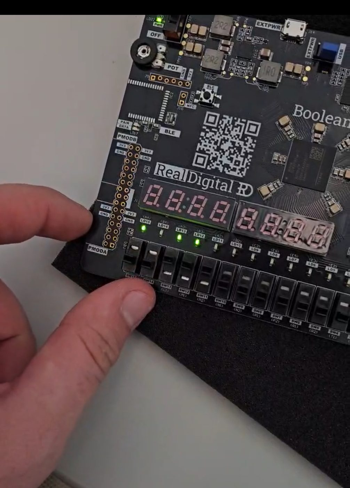
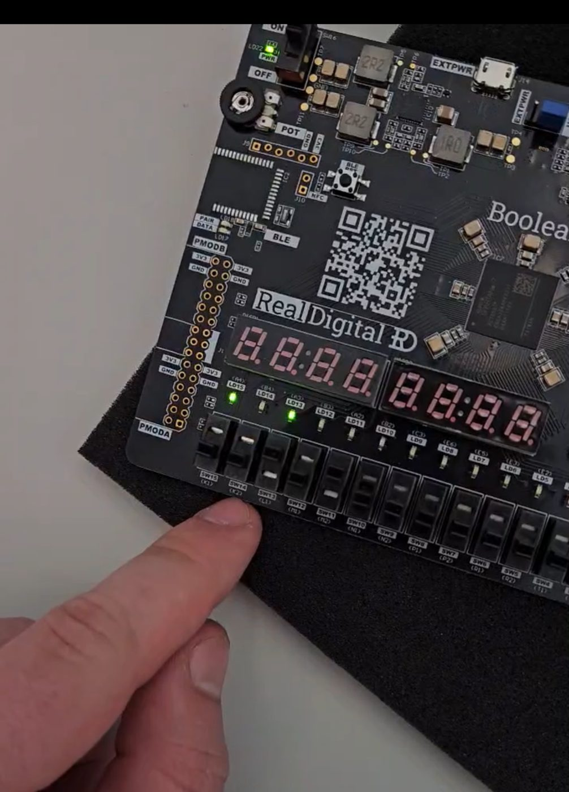
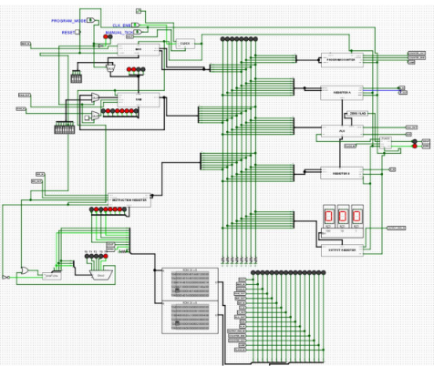
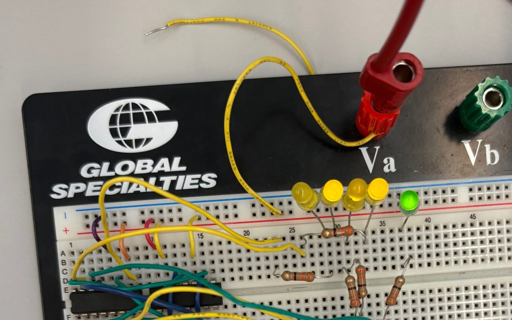

Computer Engineering · Florida Polytechnic University
Ethan Beasley
I build hardware that does something you can watch: digital logic on a breadboard, a CPU on an FPGA, and small robots that steer themselves or follow commands from a smartwatch.
B.S. Computer Engineering · Dec 2026
Robotics Intern · SOFWERX
Systems Engineer · Tampa Microwave
Riverview, FL
Car completing laps of the track on its own
01 Robotics · Computer vision
Autonomous Vision-Guided Car
A small robot car that drives a taped track with no remote control. An onboard camera reads the lane markings, and the car turns that image into steering decisions in real time to stay on course around the loop.
Focus
Camera-based lane following, closed-loop steering
Platform
Small-scale robot car on a scale road course
Result
Continuous laps of the track without intervention
Driving the car from the watch on my wrist
02 Embedded · Wireless control
Smartwatch-Controlled Car
A robot car driven entirely from a smartwatch. Commands from the watch are sent wirelessly to the car's controller, which translates them into motor output, so the car responds to the wearer without a handheld remote.
Focus
Wearable interface, wireless link, motor control
Platform
Four-wheel robot car and a smartwatch
Result
Live driving demo on the floor

One term of the sequence

A step later
03 Digital design · FPGA
CPU on an FPGA
A processor designed in a hardware description language and synthesized onto an FPGA. To prove it works, the CPU runs a program that computes the Fibonacci sequence and shows each term on the board's LEDs as it executes.
Focus
Datapath, control unit, instruction execution
Platform
Real Digital Boolean FPGA board
Result
Fibonacci program running on custom hardware

Full CPU schematic in Logisim
04 Computer architecture · Simulation
RISC-V CPU in Logisim
A RISC-V processor built gate by gate in Logisim. A program counter, instruction register, general registers, ALU and RAM all share a common bus, with control logic sequencing each instruction. A clock with manual stepping and a program mode make it possible to load code and watch every instruction move through the datapath.
Focus
Datapath and control design, instruction sequencing
Blocks
PC, instruction register, registers A and B, ALU with zero flag, RAM, output register
Tool
Logisim
Tag scanned, gate arm lifts
05 Embedded · RFID
RFID Toll Gate
A working model of an electronic toll lane. When a "vehicle" carrying an RFID tag reaches the reader, the microcontroller checks the tag and drives a servo that raises the gate arm, then lowers it again.
Focus
RFID reading, tag validation, servo actuation
Hardware
Microcontroller, RFID reader and key fob tags, servo
Result
Gate opens on a scanned tag

Four yellow LEDs for the sum, green for carry out
06 Digital logic · Breadboard
4-Bit Binary Adder
Two 4-bit numbers added in hardware. The circuit is wired by hand on a breadboard, with the result shown in binary on four LEDs and a fifth LED lit when the sum overflows into a carry.